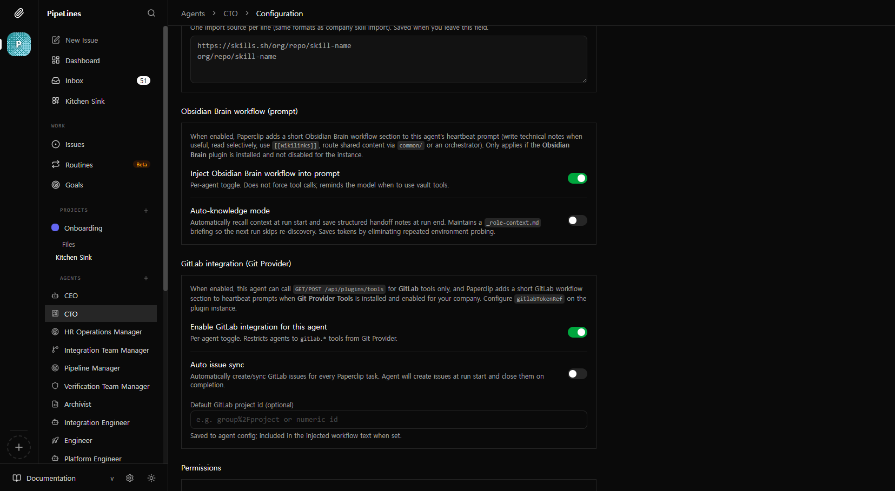

서버 개조 — AWS → 로컬 + Cloudflare Tunnel
클라우드 서버에서 웹훅을 받던 구조를 버리고, 로컬 서버에 Cloudflare Tunnel을 붙여 에이전트의 핵심 가치(코드베이스 직접 접근)를 살린 과정입니다.
← AI ORCHESTRATION PIPELINE 개요왜 클라우드에서 로컬로 옮겼는가
처음에는 외부 서비스(GitLab 등)가 웹훅을 보낼 수 있도록 서버를 AWS EC2에 올렸습니다. 하지만 이 구조에서는 에이전트가 로컬 코드베이스에 접근할 수 없어, 코드를 직접 읽고 수정하는 AI 에이전트의 핵심 가치가 사라졌습니다.
인프라 전환
- 외부 웹훅 수신은 간단
- 에이전트가 로컬 파일 접근 불가
- 코드 변경마다 재배포 필요
- 에이전트 ↔ 원격 저장소 간 동기화 복잡도
- 에이전트가 프로젝트 파일을 직접 다룸
- 고정 도메인으로 외부 웹훅 수신
- 코드 변경 즉시 반영
- 배달 영속화로 네트워크 단절 대응
구현 상세
1. 공인 진입점 (Cloudflare Tunnel)
cloudflared로 로컬 API 포트를 고정 호스트네임에 매핑하고, GitLab 웹훅 URL에 전체 경로(/api/plugins/<id>/webhooks/gitlab)까지 포함해 등록합니다. Quick 터널(임시)과 Zero Trust 고정 도메인을 구분해 운영 환경에 맞게 선택할 수 있도록 문서화했습니다.
2. 퍼블릭 베이스 URL
API 프로세스에 PAPERCLIP_PUBLIC_BASE_URL을 scheme + host만 두어, 보드·플러그인 상세에 노출되는 웹훅 베이스가 터널/프록시와 일치하도록 맞췄습니다. DNS 이름 혼동으로 502가 나는 케이스를 체크리스트로 정리했습니다.

3. 웹훅 수신·배달 영속화
로컬 서버의 최대 약점인 "네트워크 불안정"을 다음과 같이 보완했습니다.
- 인바운드:
POST /api/plugins/:pluginId/webhooks/:endpointKey— 플러그인 매니페스트의endpointKey와 정합 - 배달 영속화:
plugin_webhook_deliveries테이블에 페이로드·헤더·상태·retryCount/nextRetryAt저장 - 백오프 재시도: 30초 → 2분 → 10분 → 1시간, 상한 5회. 워커 일시 오류를 흡수
- 진단 API: 배달 이력 조회, 테스트 전송, 수동 재시도, 브라우저 GET으로 URL 확인
- 본문 파싱: Slack
urlencoded와 JSON 모두에서 raw body를 남겨 서명 검증 가능
4. 502 트러블슈팅 구분
Cloudflare 엣지 502(text/plain + error code: 502)와, 요청이 API까지 도달한 뒤의 JSON 에러 응답을 분리해 인프라 vs 애플리케이션 원인을 빠르게 진단할 수 있습니다.
데이터 흐름
GitLab 웹훅이 Tunnel을 거쳐 로컬 서버에 도달하고, 실패 시 재시도되는 전체 경로입니다.
이 전환이 남긴 것
- 에이전트의 핵심 가치 보존로컬 파일을 직접 읽고 쓰는 에이전트의 강점을 유지하면서도, 외부 서비스와의 안전한 연동을 확보했습니다.
- 네트워크 단절에 대한 구조적 대비배달 영속화와 백오프 재시도로, 한 번 끊겼다고 이벤트가 사라지지 않는 신뢰 가능한 수신 경로를 만들었습니다.
- 운영 편의코드 변경이 재배포 없이 즉시 반영되고, 진단 API로 웹훅 배달 상태를 실시간 확인할 수 있습니다.